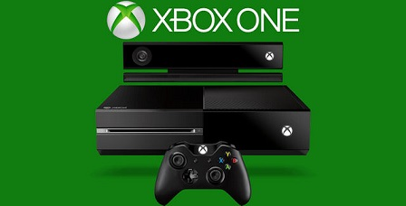
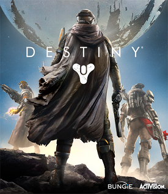

D CONN'S GAME REVIEWS
Welcome to D Conn's game reviews! Here I will give you reviews from a few video games that I've played. All of these game were played on Xbox One and all of these reviews will be based off of my personal experience.

Xbox One Game Reviews
MADDEN NFL 16
{kind=link}
Madden NFL 16 is truly more than just a roster upgrades like a couple of the previous Maddens have been. Graphics have been upgraded, gameplay has been greatly improved, and the new WR/DB interactions have made this game more realistic than ever.
Being the playmaker has become even better. New throwing mechanics have been intrduced, including a Touch, High Point, and Low Point pass. Also new WR mechanics have also been introduced. Aggresive catching, RAC catching, and Possesion catching allows you to be in control of your WR more and will test the user skill of the defense more than ever.
Madden NFL 16 brings in a new game mode known as Draft Champions. This mode can be played online and offline and will bear rewards for MUT depending on how many games you win. You go through a 15 round draft, similar to Fantasy Football, to improve your base team and challenge either the CPU or other players teams to see who's team is the best!
Madden Ultimate Team(MUT) has also improved. They've introduced NFL Journey, a series of games from game-changing moments from real NFL games. You're also able to changed the time, location, and other smaller things when playing solo challenges that require you to play all 4 quarters.
Although Madden still has a few problems and a few bugs, it has really come a long way from previous versions. It provides a great experience all around. I would give this game an 8.5/10!
Purchse at GameStopDESTINY
{kind=link}
Destiny is a game that takes a bit of time to get into for some, and other are able to jump right in it. I personally found this game to be quite fun and interesting, although some missions and such seems like a repeat of an earlier mission.
In terms of presentation, gameplay, and potential, this game deserves a perfect score. It's one of the most addictive shooters I've ever played. It manages to combine the loot driven PvE content of Borderlands and the insanely polished and fast paced PvP shooting in Halo.
Although I mentioned this game cn become easily addicting, the story isn't the best. Minor quests and some major quests are just repeats of each other with different enemies to kill at times. Aside from the story, this game is great to play with friends/strangers in the crucible and in Strikes as well.
There are plenty of things that could have been done to expand this game and make it so much better than it is, but right now, I believe this game is still a good game. It seem like this game was released to have content added to it to make this experience much better. This game get a 8/10 overall from me!
Purchse at GameStopGrand Theft Auto 5

Grand Theft Auto 5(GTAV) is by far the best GTA game since San Andreas. Having played this game on last-gen consoles, this game has made an upgrade from last-gen consoles to next-gen consoles. The graphics are almost realistic, the story mode is fun and interesting, and the online mode provides great amounts of fun outisde from the story.
The graphics are outsianding on this game. Sometimes I catch myself stopping what I'm doing at just looking around at how real the graphics look. It's outstanding! The game is set at 30 fps(frames per second), but like any game, there are a few hiccups. That's only usually with high speed chases/races, traffic jams, and multiple explosion. Other than those minor glitches, the graphics are almost flawless.
When I heard the story mode consisted of 3 players, I thought to myself that that would be too overwhelming for players to control 3 players. After playing for a few hours, i realized it wasn't bad at all. The jump between players is seamless and was a great idea instead of making a seperate DLC for each character. The story will have you wanting to play mission after mission. Cutscenes, voice acting, and animations are all very top notch.
The online aspect of GTA has come a long way as well. When GTA Online first lauched, the glitches and lag was countless tot eh point where many people either stopped playing for a while or kept getting kicked from the servers every 5 minutes. Now, online mode doesn't have those issues as much, which means Rockstar are continuing to fix those problems, even if it's slowly. On top of that, Rockstar continues to provide the players with free DLC to download to expand their gameplay with new, clothes, cars, mission, guns, heists, etc. One problem they still have is the wait time on the loading screen, which take quite a while to load up. Once the online mode is loaded however, lad is hardly an issue and there is much to do and fun to be had. Overall, I'd give this game a 9/10 due to the loading times and periodic disconnects from the server!
Purchse at GameStop